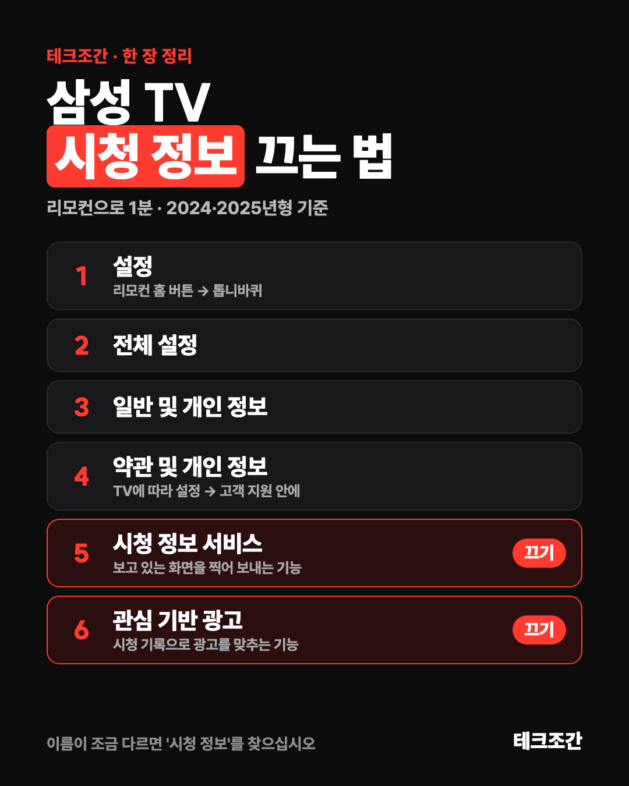

 영상 자료
영상 자료003 · 2026. 10. 28. · 삼성 스마트 TV
삼성 TV 시청 정보 끄는 법
영상에서 말한 그 기능입니다. 메뉴 네 단계 안쪽에 숨어 있습니다. 두 개만 끄면 화면을 찍어 보내던 통신이 끊깁니다. TV 보는 데는 지장 없습니다. 아래 한 장을 저장해 두고 TV 앞에서 따라 하십시오.
- 7,200번, 한 시간에 찍는 횟수
- 4단계 안쪽
- 2개 끄면 끝
끄는 순서 (2024·2025년형 기준)
- 1. 설정
- 리모컨 홈 버튼을 누르고 왼쪽 메뉴에서 설정(톱니바퀴)으로 갑니다.
- 2. 전체 설정
- 설정 화면 아래쪽의 '전체 설정'을 엽니다.
- 3. 일반 및 개인 정보
- 목록에서 '일반 및 개인 정보'로 들어갑니다.
- 4. 약관 및 개인 정보
- 개인 정보 동의가 여기 모여 있습니다. TV에 따라 '설정 → 고객 지원 → 약관 및 개인 정보'에 있기도 합니다.
- 5. 시청 정보 서비스
- 끄십시오. 이게 핵심입니다. 보고 있는 화면을 인식해서 무엇을 보는지 삼성 서버로 보내는 기능(ACR)입니다. 게임기·노트북을 꽂은 화면도 여기에 걸립니다.
- 6. 관심 기반 광고
- 같이 끄십시오. 시청 기록으로 광고를 맞추는 기능입니다.
- 덤: 음성 인식
- 빅스비 음성을 안 쓰시면 같은 자리의 '음성 인식 서비스' 동의도 해제하십시오.

메뉴 이름이 다르면
이 단어만 찾으십시오
'시청 정보', '관심 기반', '맞춤 광고', '약관', '개인 정보 보호'. 연식과 소프트웨어마다 이름과 위치가 조금씩 다릅니다. 오래된 TV에는 영어 'SyncPlus'가 들어간 항목으로 있다고 합니다.
확인메뉴 화면은 직접 찍지 못했습니다. 이름은 삼성 공식 안내와 해외 안내(Consumer Reports, Tom's Guide, Malwarebytes)를 맞춰 본 것입니다.
끄고 나서
끄면 정말 멈추나
2024년 학회 논문(IMC 2024, 영국·미국에서 삼성·LG TV 통신을 잰 연구)에서 시청 정보 수집을 거부하자 ACR 서버와의 통신이 사라졌습니다. 같은 연구에서 삼성은 1분마다, LG는 15초마다 보냈습니다.
확인통신이 끊긴다는 건 논문의 측정입니다. 우리가 TV 통신을 직접 잰 것은 아닙니다.
덤
LG TV라면
LG는 '라이브 플러스(Live Plus)'가 같은 기능입니다. 설정 → 전체 설정 → 일반 → 시스템 → 추가 설정에서 라이브 플러스를 끄십시오. 같은 곳의 '광고'에서 맞춤 광고도 끌 수 있습니다.
확인LG 메뉴도 직접 찍지 못했습니다. 해외 안내(Consumer Reports, Tom's Guide)의 경로를 옮겼습니다.